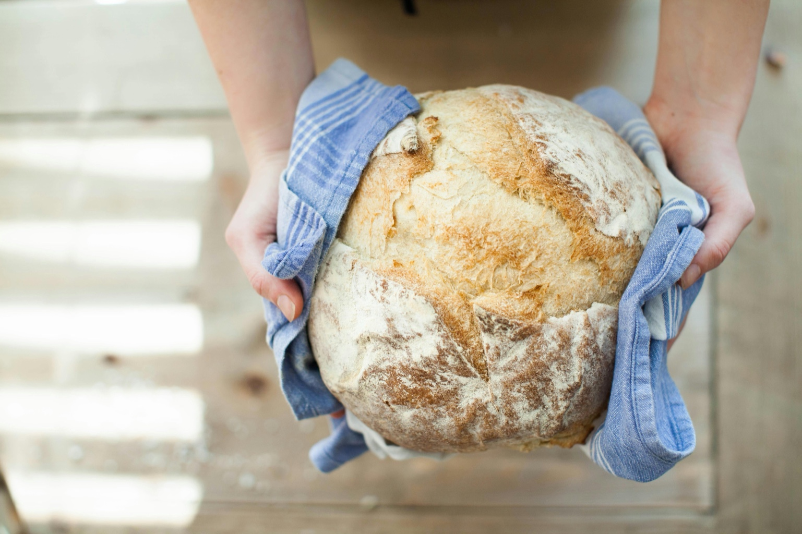
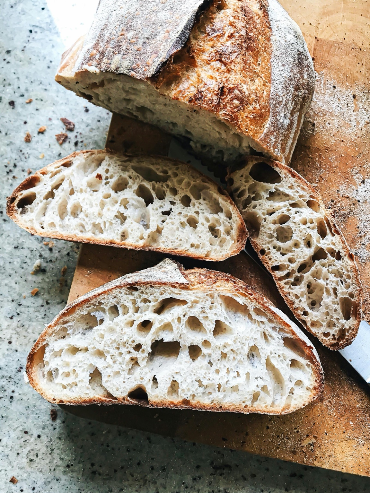

Simple Ingredients
Thoughtfully made with ingredients you can feel good about.
Our Story
What started as baking for family and friends quickly turned into something more. Our passion for traditional sourdough and simple, wholesome baking inspired us to start a small micro-bakery rooted in quality, care, and intention.
Every loaf is crafted with patience and care, bringing the flavor, texture, and quality of real bread back to the table and back to the community.


Core Values
I fell in love with sourdough and the entire process behind it. From fermentation to flavor, it represents everything I value about baking: patience, craftsmanship, and ingredients that serve people well.
Reign & Wilder was built around a genuine desire to educate and provide a cleaner, higher-quality bread product — one that better aligns with the way many families want to eat and live.
Thoughtfully made with ingredients you can feel good about.
Slow fermentation, real craftsmanship, and no rushed shortcuts.
Made with flavor, nourishment, and everyday enjoyment in mind.
Created to bring wholesome bread and honest baking back locally.
Why Sourdough
Traditional fermentation can make bread easier for some people to enjoy compared to heavily processed commercial options.
A slower process, fewer unnecessary additives, and ingredients chosen with care create a more intentional product.
Real sourdough offers depth of flavor, texture, and character that only come from time and proper fermentation.
Freshly Baked
Whether you're here for a weekly loaf, a special order, or simply to follow along, we're grateful to share this craft with you.
Get in Touch